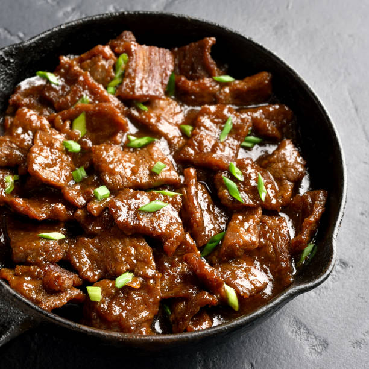

Back
Mongolian Beef and Spring Onions

This Mongolian beef recipe with green onions has a soy-based sauce for a
Chinese-style beef dish. Best served over soft rice noodles or rice.
Mongolian beef is a dish from Taiwan consisting of sliced beef, typically
flank steak, usually made with onions. The beef is commonly paired with
scallions or mixed vegetables and is often not spicy. The dish is often
served over steamed rice, or in the US, over crispy fried cellophane noodles.
It is a staple dish of American Chinese restaurants. Despite its name, the
dish has nothing to do with Mongolian cuisine.
Ingredients
- 2 teaspoons vegetable oil
- 1 tablespoon finely chopped garlic
- ½ teaspoon grated fresh ginger root
- ⅔ cup dark brown sugar
- ½ cup soy sauce
- ½ cup water
- 1 pound beef flank steak, sliced 1/4 inch thick on the diagonal
- ¼ cup cornstarch
- 1 cup vegetable oil for frying
- 2 bunches green onions, cut in 2-inch lengths
Steps
-
Heat 2 teaspoons of vegetable oil in a saucepan over medium heat.
Add garlic and ginger; cook and stir until fragrant, about 30 seconds.
Stir in brown sugar, soy sauce, and water. Increase heat to medium-high;
stir until sauce boils and slightly thickens, about 4 minutes. Remove
sauce from the heat and set aside.
-
Place beef into a large bowl; add cornstarch and mix until beef is
thoroughly coated. Set aside until most of the cornstarch has been
absorbed, about 10 minutes.
-
Heat vegetable oil in a deep skillet to 375 degrees F (190 degrees C).
-
Shake excess cornstarch from beef slices and drop into hot oil, a few
at a time, stirring briefly and frying until edges become crisp, about
2 minutes. Remove beef with a large slotted spoon; drain on paper towels.
-
Remove excess oil from the skillet, then heat the skillet over medium
heat; add beef slices and stir in prepared sauce. Add green onions and
bring to a boil; cook until the onions have just softened and are bright
green, about 1 to 2 minutes.
Credit to vkarlson
who made this recipe.